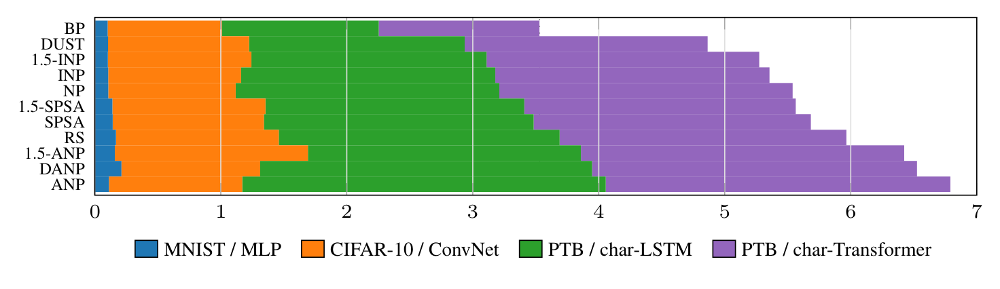
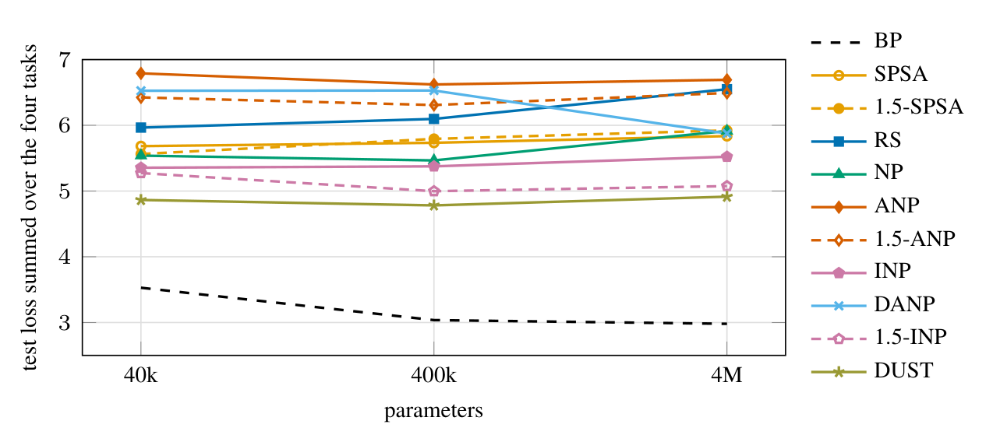

A ZOO deep learning survey: twelve ways to train without backprop, one budget
In early 2024 I wrote about my journey from first-order to zeroth-order optimization, and how painful it is. Zero-order optimization (ZOO) trains a network from loss evaluations alone, without back-propagating errors. That is the natural training rule for neuromorphic and analog hardware, for systems that are not differentiable, for biologically plausible learning, and for training when you cannot afford to store activations.
There are a lot of ZOO rules: SPSA, random search, the whole node-perturbation family, forward-forward, curvature-preconditioned variants, and new ones every month. But every paper picks its own networks, its own budget and its own baselines, so they are almost never compared head to head. I wanted to know which one actually trains best when they all get the same networks, the same compute and the same update rule.
So I put twelve backprop-free rules in one ring with backpropagation as the reference. The paper, the LaTeX, the code, the job lists and the per-minute history of every run are public.
What did we compare?
Four networks of about 40k parameters each: an MLP on MNIST, a ConvNet on CIFAR-10, and a character-level LSTM and Transformer on Penn Treebank. Every run gets one hour on one RTX 5090, counting only training time. Every probe method gets the same 16 forward passes per step (17 for the curvature-preconditioned rules, which need a clean pass), and every gradient estimate goes through the same Adam update. The probe scale is tied to the learning rate, a single knob ε, which a screening sweep picks per method and task from five values. The selected setting is then rerun with three seeds and reported at the best validation checkpoint.
The rules:
- Weight-space perturbation: SPSA, its curvature-preconditioned variant 1.5-SPSA, and random search.
- Node perturbation: perturb the activities instead of the weights, then turn each loss change into a local weight update. Classic (NP), activity-based (ANP), iterative one layer at a time (INP), decorrelated (DANP), curvature-preconditioned (1.5-ANP), and a new combination, 1.5-INP.
- Two recent Transformer rules from Q Labs: DUST, a token-local node-perturbation rule, which I ported to all four networks, and identity-path credit from their Noise speedrun.
- Forward-forward, Hinton's local goodness rule.
DUST is the best probe method, and the gap to backprop is still large
The chart below sums each rule's test loss over the four tasks. Backprop scores 3.53. DUST is the best zero-order rule at 4.86, ahead of 1.5-INP (5.27) and iterative node perturbation (5.36). Classic node perturbation and the weight-space rules (1.5-SPSA, SPSA, random search) follow, and the activity-based and decorrelated variants come last.

The picture depends a lot on the task:
- MNIST is nearly solved. The best node-perturbation rules reach 96.7–97.0% accuracy against backprop's 97.0%.
- CIFAR-10 is not. Classic node perturbation is best at 65.0%, against backprop's 69.2%.
- Language models are where DUST shines. 2.47 bits per character on the LSTM and 2.78 on the Transformer, against 2.69 and 3.11 for the next rule. DUST's LSTM beats an add-0.1 trigram model (2.61), which most rules do not. But backprop reaches 1.80 and 1.84: after an hour, most zero-order rules have learned roughly bigram statistics, and backprop has learned a real character model.
The step size matters more than the probe scale. At ε = 10−4, eight of the ten original rules improve on both image tasks, and SPSA and random search close about half of their gap. The step size has to be screened per method before the estimators can be compared.
Identity-path credit closes part of the Transformer gap
Identity-path credit measures the error at the top of a residual network exactly, by finite differences through the final norm and readout, and sends that same error down the residual path to every block. Each block then takes one cheap local step. It needs only one forward pass per step, so it takes 308k steps in the hour where DUST takes 78k.
On the Transformer it beats every other backprop-free rule: 2.56 bits per character, against DUST's 2.78 and backprop's 1.84. It also gets relatively better as the model grows: its gap to backprop narrows from 0.72 bits per character at 40k parameters to 0.44 at 4M. The catch is that it needs a residual stream, so it does not apply to the MLP, the ConvNet or the LSTM.
Curvature preconditioning does not help
This one is personal, since 1.5-SPSA and 1.5-ANP are my own methods. Their idea is to spend one extra clean pass on a three-point curvature estimate and damp the step where the loss is sharp. Under a fair budget, the curvature factor does not earn its pass:
- 1.5-SPSA matches SPSA. Its per-direction weights span a narrow range, and Adam removes their common scale. Under plain SGD it does not help either.
- 1.5-ANP does fix plain ANP on the sequence models, but its control with the curvature exponent set to zero does just as well. The gain comes from its other ingredients (central differences, per-unit normalization, token-local credit), not the curvature.
- 1.5-DUST, the 1.5 estimator inside DUST, lowers the alignment with the true gradient on all four tasks in a CPU check, so I did not spend GPU time on it.
I would rather publish that than leave it out.
Scaling up does not close the gap
I reran the rules at 10× and 100× the parameter count (400k and 4M, one seed each). DUST and 1.5-INP stay the two best probe methods, but backprop improves more, so the gap widens. The step size picked at 40k also has to shrink with width.

What comes next
The honest summary: zero-order rules are competitive on MNIST, behind on CIFAR-10, and still 0.7 to 0.9 bits per character behind backprop on small language models after an hour. The rules that do best are the ones that assign credit locally, per token and per layer, rather than estimating the gradient of every weight at once. Identity-path credit suggests that using the architecture's structure can close the gap faster than adding probes.
This is a small-scale benchmark with a one-hour budget, so it does not say what happens after days of training or at billions of parameters. That is exactly why everything is public: the code, the job lists, every run's per-minute history and the editable LaTeX, so anyone can add a rule or a budget and rerun the comparison.
Read the preprint or explore zero_order_optimization_DL_survey on GitHub.